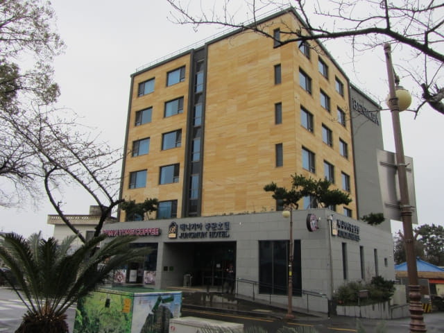
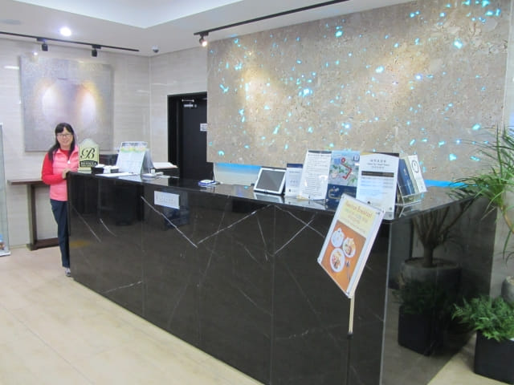
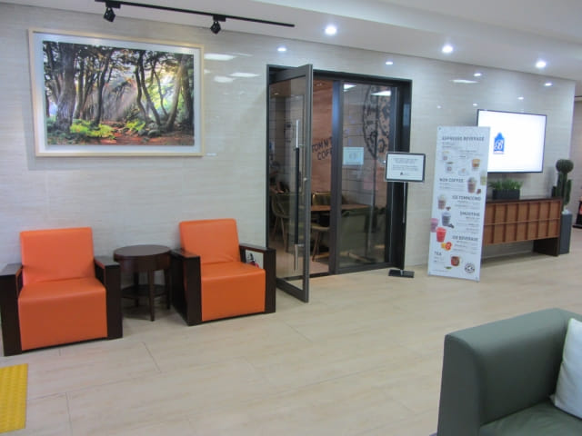
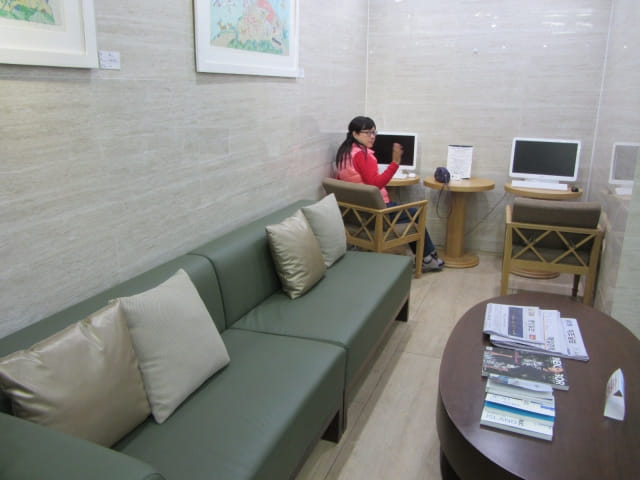

在濟州國際機場乘600號豪華機場巴士到達中文區的如美植物園巴士站, 車程約五十分鐘。下了車, 走走看看, 步行二十多分鐘便抵達我們下榻的本暱客雅酒店 – 中文 (Benikea Jungmun Hotel), 也是我們這旅程的第一間酒店。
濟州島本暱客雅酒店 – 中文房間寬敞舒適, 景觀開揚, 豐富自助早餐, 可謂價廉物美, 是我們推薦的酒店。我們是 Agoda 聯合行銷夥伴, 大家可以透過以下鏈結預訂本暱客雅酒店 – 中文 (Benikea Jungmun Hotel)、濟州島或韓國其他地方的酒店。
酒店服務員操流利英語, 溝通絕對沒有問題。

酒店大堂。


酒店附設的餐廳。

酒店大堂的商務中心, 有兩台電腦供客人免費使用。

因只是早上九時半, 還未到入住時間, 便將行李寄放在一樓的服務處, 這樣便可以輕鬆的開始今天的行程。
今天的天氣很差, 正下著大雨, 加上昨晚沒有睡覺, 精神不太好, 看來只可安排往酒店附近的景點遊覽。看看地圖, 決定先往酒店附近的天帝淵瀑布, 其實剛才走來酒店時也經過。
NH Bank兌換韓元
想起口袋內只有幾萬韓元, 只可應付今天的開支, 目前最重要是兌換韓元。問了酒店服務員, 她告訴我們酒店斜對面那間 NH Bank 是 Auto Bank, 沒有兌換外匯服務的, 不過, 離酒店約三個街口有另一間 NH Bank, 我們可以往那裡兌換韓元。
接著沿酒店前的馬路往下走, 不一會便來到 NH Bank。推門進內, 今天美元兌韓元的匯率是1100.80, 和出發前在網上查詢的匯率差不多, 應該是不錯的了。
看見匯率頗好, 便用八百美元兌換了約八十八萬韓元, 應該足夠應付這旅程上半部份的行程。我們的策略是, 如果稍後有更好的匯率, 便兌換多一些。
以往在韓國也曾經多次在 NH Bank 兌換韓元, 發覺比其他銀行的匯率好很多。不要以為民間找換店的匯率一定比銀行好, 隨時會「中招」的, 最好都是比較完才決定。
兌換了韓元, 便可以安心開始這韓國之旅的第一個行程 – 天帝淵瀑布。